1. Introduction
This post belongs to the code art series, where art is built with code. The previous post and this one will aim at defining a function to create a geometric pattern, a spirograph pattern in a rectangle, inspired by this video, with Python libraries.
We will follow these steps:
- Grid definition, parametric equation of the rectangle in Part1.
- Polygon vertex detection, postprocessing of intersection points, colour scheme definition, global function implementation and final drawings in Part2.
2. Point coordinates of the four intersecting segments
We use some functions to make the drawing code more compact.
When we have the coordinates of the 4 points (A, B, C, D) we calculate the coordinates of the intersecting points with seg2intersection.
The homogeneous method to get the coordinates of the intersecting points has been proved to be faster in this post.
def seg2intersection(AAs, BBs, CCs, DDs):
toHomCoords = lambda pnts: np.hstack((pnts, np.ones((4, 1))))
AHs = toHomCoords(AAs)
BHs = toHomCoords(BBs)
CHs = toHomCoords(CCs)
DHs = toHomCoords(DDs)
L1 = np.cross(AHs, CHs)
L2 = np.cross(BHs, DHs)
PIHs = np.cross(L1, L2) # homogeneous coordinates for intersecting point
xIHs, yIHs, zIHs = np.split(PIHs, 3, axis=1)
paralSeg = np.abs(zIHs)<1e-5
zIHs[paralSeg] = 1
xIs, yIs = xIHs/zIHs, yIHs/zIHs
xIs, yIs = xIs[paralSeg==0], yIs[paralSeg==0]
polygonalPoints = np.vstack((xIs, yIs)).T
return polygonalPoints
polygonalPoints = seg2intersection(AAs, BBs, CCs, DDs)
print('The coordinates of the 4-point polygon are\n{}'.format(polygonalPoints))
The coordinates of the 4-point polygon are
[[-15. -0.]
[ -5. -0.]
[-15. -0.]
[ -5. -0.]]
3. Polygon cleaning
The filtering process to get rid of duplicates and points outside the rectangle, is in rectPointFiltering.
It basically checks that the intersecting-points set is unique and that these points lie within the rectangle.
The polygon is anticlockwise sorted in polygonSorting.
def rectPointFiltering(polygonalPoints, width, height):
polygonalPoints1 = np.unique(np.around(polygonalPoints, decimals=6), axis=0)
criteria = np.logical_and(np.all(polygonalPoints1>=0, axis=1),\
np.logical_and(polygonalPoints1[:,0]<=width, polygonalPoints1[:,1]<=height))
return polygonalPoints1[criteria, :]
def polygonSorting(polygonalPoints):
centroid = np.mean(polygonalPoints, axis=0)
polygCoord_ = list(polygonalPoints)
polygCoord_.sort(key=lambda pnt: math.atan2(pnt[1]-centroid[1], pnt[0]-centroid[0]))
return np.array(polygCoord_), centroid
4. Colour definition
The patch colour can be defined with many criteria:
fix-(green|red|blue|gray|black), where every polygon colour is same and equal to what the user selects in the available list.area, where the colour is related to the polygon area.genDist, where the colour is proportional to the minimum distance from any of the two generators.origiDist, where the colour is proportional to the distance from the origin.
For cases 2-4, the colour is chosen from a palette by Matplotlib, according to the polygon score that is assigned with the function colorCriteria.
def colorCriteria(polygs, centroid, kind, width, height):
if kind=='area':
area = poly3area(polygs) if polygs.shape[0]==3 else poly4area(polygs) # polygon area
score = np.log(area)
elif kind=='originDist':
score = np.sum(centroid**2) # square distance from origin
elif kind=='centrDist':
score = np.sum((centroid-np.r_[width, height]/2)**2) # square distance from center
elif kind=='genDist':
distGenerA = np.sum((centroid-np.array(Pa))**2)
distGenerB = np.sum((centroid-np.array(Pb))**2)
score = min(distGenerA, distGenerB) # minimum square distance from any of the two generators
else:
score = 0
return score
Its area is determined with poly3area if it has 3 vertexes or with poly4area if it has 4 vertexes.
If you want to read more about the area of a 3-point polygon from its points’ coordinates, visit this page post.
What poly4area does is simply to split a 4-point polygon into two 3-point polygons, get the area of each with poly3area and sum them together.
def poly3area(poly3vert):
AB = np.diff(poly3vert[:2,:], axis=0)
AC = np.diff(poly3vert[[0, 2],:], axis=0)
return np.cross(AB, AC)[0]/2
def poly4area(poly4vert):
areaABD = poly3area(poly4vert[[0, 1, -1], :])
areaBCD = poly3area(poly4vert[[1, 2, -1], :])
return areaABD + areaBCD
5. Global function
The final drawing logic is placed in drawingSpirograph, where the 4 hyperparameters are assigned.
Here a list of different colormaps available in Matplotlib.
import sys, random, math
import numpy as np
import matplotlib.pyplot as plt
from matplotlib.patches import Circle, Wedge, Polygon, Rectangle
from matplotlib.collections import PatchCollection
%matplotlib inline
import itertools
def drawingSpirograph(Nh=16, width=6, height=4, genLocs=(.3, .3), kind = 'centrDist',\
figSize = 10, palette='gist_rainbow', patchAlpha=.5):
colDict = {'green': [0, 1, 0], 'red': [1, 0, 0], 'blue': [0, 0, 1], 'gray': [.5, .5, .5], 'black': [0, 0, 0]}
Lseg = height/Nh
Nw = coord2index(width, Lseg)
Ntot = int(2*(Nw + Nh))
width = Nw*Lseg
kA = coord2index(genLocs[0]*width, Lseg)
kB_ = coord2index(genLocs[1]*width, Lseg)
kB = 2*Nw + Nh - kB_
AA = np.r_[kA*Lseg, 0]
BB = np.r_[kB_*Lseg, height]
AAs = np.tile(AA, (4,1))
BBs = np.tile(BB, (4,1))
idxAB = kB - kA - 1
plt.figure(figsize=(figSize, figSize))
rect = Rectangle((0, 0), width, height)
patches, patchColors = [], []
for dka in range(Ntot-2):
for dkb in range(Ntot-2):
chessOrder = 1 if dka>=idxAB else 0
isDraw = (dkb-(dka%2)+chessOrder)%2 == 0
if isDraw:
CCs, DDs = rectIndex2coords(kA, kB, width, height, dka, dkb, Nw, Nh, Ntot)
polygonalPoints = seg2intersection(AAs, BBs, CCs, DDs)
if polygonalPoints.shape[0]>0:
polygonalPoints2 = rectPointFiltering(polygonalPoints, width, height)
if polygonalPoints2.shape[0]>=3:
polygonalPoints3, centroid = polygonSorting(polygonalPoints2)
centrDist = np.sum(centroid**2)*100
polygon = Polygon(np.array(polygonalPoints3), True)
patches.append(polygon)
if not kind.startswith('fix'):
score = colorCriteria(polygonalPoints3, centroid, kind, width, height)
patchColors.append(score)
pc = PatchCollection(patches, alpha=patchAlpha, cmap=getattr(plt.cm, palette)) #plt.cm.RdYlBu
if kind.startswith('fix'):
fixColor = colDict[kind.split('-')[-1]]
pc.set_color(fixColor)
else:
pc.set_array(np.array(patchColors))
ax = plt.gca()
ax.add_collection(pc)
ax.get_xaxis().set_ticks([])
ax.get_yaxis().set_ticks([])
ax.axis('off')
ax.axis('equal')
ax.axis([0, width, 0, height]);
6. Let’s draw
We list here some examples of spirograph patterns in a circle with our Python function.
drawingSpirograph()
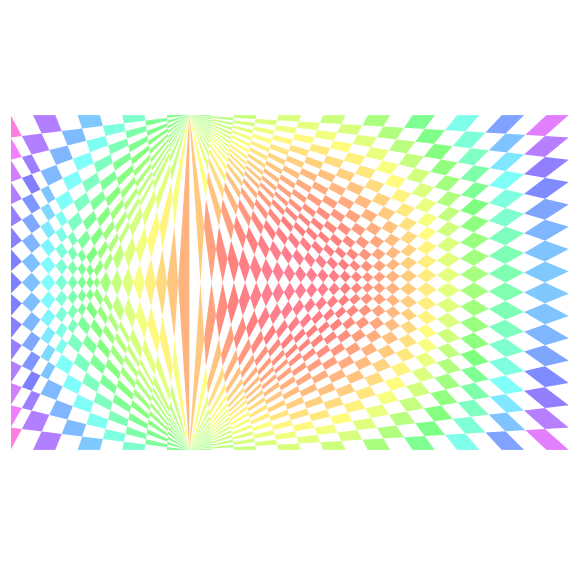
drawingSpirograph(Npnts=16, width=4, height=4, genLocs=(.5, .5), figSize=6)
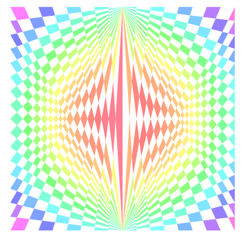
drawingSpirograph(Npnts=16, width=4, height=4, genLocs=(.0, 1.), figSize=6)
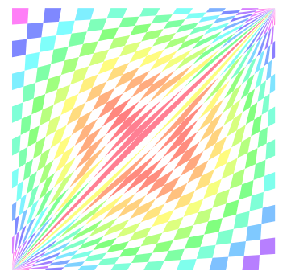
drawingSpirograph(Npnts=16, width=4, height=4, genLocs=(.0, 1.), figSize=6, kind='fix-green')
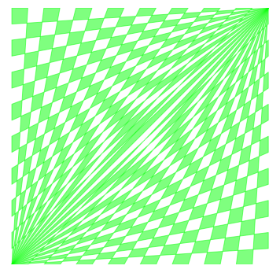
drawingSpirograph(Npnts=16, width=4, height=4, genLocs=(.0, 1.), figSize=6, kind='fix-black')
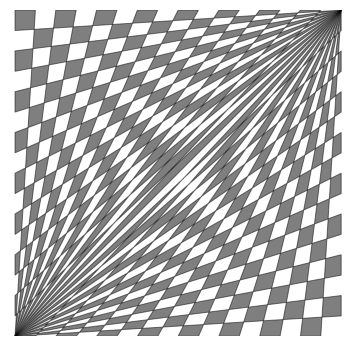
drawingSpirograph(Npnts=16, width=4, height=4, genLocs=(.0, 1.), figSize=6, kind='fix-blue')
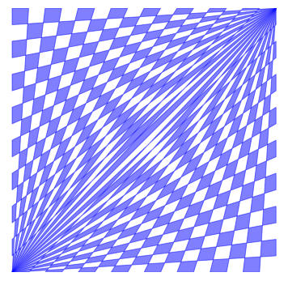
drawingSpirograph(Npnts=16, width=4, height=4, genLocs=(.5, .5), figSize=6, kind='fix-blue')
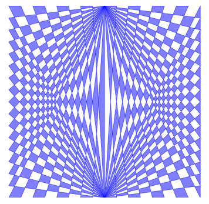
drawingSpirograph(Npnts=16, width=4, height=4, genLocs=(.3, .7), figSize=6, kind='fix-blue')
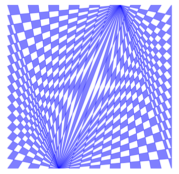
drawingSpirograph(Npnts=16, width=4, height=4, genLocs=(.3, .7), figSize=6, kind='originDist')
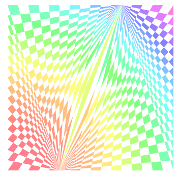
drawingSpirograph(Npnts=16, width=4, height=4, genLocs=(.3, .7), figSize=6, kind='originDist', palette='rainbow')
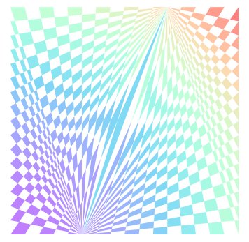
drawingSpirograph(Npnts=16, width=4, height=4, genLocs=(.3, .7), figSize=6, kind='area', palette='Set3')
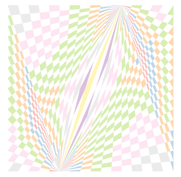
drawingSpirograph(Npnts=16, width=4, height=4, genLocs=(.3, .7), figSize=6, kind='centrDist', palette='cool')
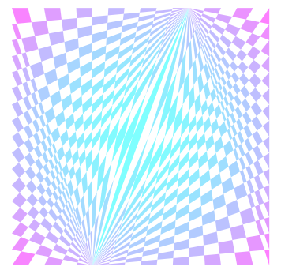
drawingSpirograph(Npnts=32, width=8, height=8, genLocs=(.0, 1.), figSize=6, kind='originDist', palette='rainbow')
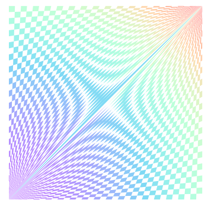